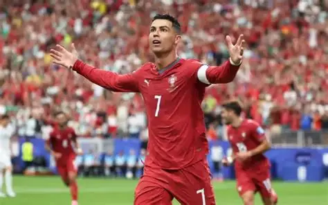

Miksi Ronaldo on G.O.A.T.?

Pitkäikäisyys ja sopeutumiskyky
976 maalia virallisissa otteluissa ja yli 40 maalia neljänätoista eri kalenterivuotena.
Hän on tehnyt maaleja Portugalissa, Englannissa, Espanjassa, Italiassa ja Saudi-Arabiassa — ja rakentanut pelityylinsä uusiksi kahdesti: laituriräpeltäjästä keskusmaalitykiksi, sitten boksipelaajaksi. Messi ei ole joutunut siihen samalla tavalla, koska hänen ei ole tarvinnut.
Maajoukkuetuotto
146 maalia Portugalille, kaikkien aikojen ennätys miesten maajoukkuejalkapallossa, ja ensimmäinen pelaaja — mies tai nainen — joka on tehnyt maalin kuudessa eri MM-kisassa.
Kontekstiargumentti
Ronaldon parhaat vuodet tulivat maajoukkueessa, joka ei ollut lähelläkään Argentiinan tasoa, ja hän vei sen silti EM-kultaan 2016.
Real Madrid oli tähtikimara, mutta ei Guardiolan Barça — Ronaldo ei koskaan pelannut järjestelmässä, joka oli rakennettu maksimoimaan juuri hänen vahvuutensa.
Messin tapauksessa on aina auki, kuinka paljon Xavi–Iniesta–Busquets teki hänestä sen mitä hänestä tuli.